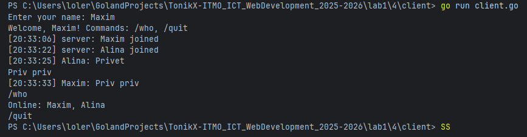
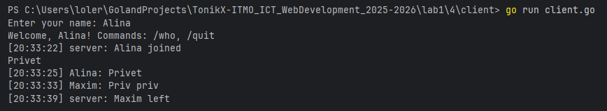

Задание 4: Многопользовательский чат на TCP
Условие
Реализовать многопользовательский чат.
Требования:
- Обязательно использовать библиотеку
socket. - Для многопользовательского чата необходимо использовать параллелизм:
Реализация:
- Протокол TCP: 100% баллов.
- (Альтернативно: UDP — 80% баллов; в клиенте отдельный поток/горшрутина на приём.)
Принцип работы
-
Сервер
- слушает адрес (TCP);
- при новом подключении запускает отдельную горутину на обработку клиента;
- хранит список активных клиентов (по имени), защищённый
sync.Mutex; - входящие сообщения складывает в общий канал трансляции и рассылает всем клиентам (через отдельную горутину-«ретранслятор»);
- поддерживает команды
/who(список онлайн) и/quit(выход).
-
Клиент
- подключается к серверу, первой строкой отправляет имя;
- отдельная горутина непрерывно читает сообщения от сервера и выводит их;
- основной поток читает ввод пользователя и отправляет строки на сервер.
-
Реальное время достигается за счёт разделения ввода/вывода в разные горутины и неблокирующей рассылки через буферизированные каналы.
Код программы
Сервер (server.go)
package main
import (
"bufio"
"fmt"
"net"
"os"
"os/signal"
"strings"
"sync"
"syscall"
"time"
)
// Сообщение, которое будет транслироваться всем
type chatMsg struct {
From string
Text string
Time time.Time
}
// Описание подключенного пользователя
type client struct {
Name string
Conn net.Conn
Out chan string // буфер исходящих строк этому клиенту
}
type server struct {
mu sync.Mutex
clients map[string]*client // по имени
bcast chan chatMsg // общий канал трансляции
}
func newServer() *server {
return &server{
clients: make(map[string]*client),
bcast: make(chan chatMsg, 128),
}
}
func (s *server) run(addr string) error {
ln, err := net.Listen("tcp", addr)
if err != nil {
return err
}
defer ln.Close()
fmt.Printf("Chat server listening on %s\n", addr)
// Горутина-транслятор: читает из s.bcast и отправляет всем пользователям
go s.broadcaster()
sigCh := make(chan os.Signal, 1)
signal.Notify(sigCh, os.Interrupt, syscall.SIGTERM)
go func() {
<-sigCh
fmt.Println("\nShutting down...")
ln.Close()
s.mu.Lock()
for _, c := range s.clients {
c.Conn.Close()
}
s.mu.Unlock()
os.Exit(0)
}()
for {
conn, err := ln.Accept()
if err != nil {
if ne, ok := err.(net.Error); ok && !ne.Temporary() {
return nil
}
fmt.Println("accept error:", err)
continue
}
go s.handleConn(conn)
}
}
func (s *server) handleConn(conn net.Conn) {
defer conn.Close()
r := bufio.NewScanner(conn)
r.Buffer(make([]byte, 0, 1024), 64*1024)
// 1) Первая строка — имя
if !r.Scan() {
return
}
name := strings.TrimSpace(r.Text())
if name == "" {
fmt.Fprintln(conn, "ERROR: empty name")
return
}
// запретим служебные символы
if strings.ContainsAny(name, " \t\r\n") || len(name) > 32 {
fmt.Fprintln(conn, "ERROR: invalid name")
return
}
// 2) Регистрируем клиента с уникальным именем
c := &client{
Name: name,
Conn: conn,
Out: make(chan string, 64),
}
if !s.addClient(c) {
fmt.Fprintln(conn, "ERROR: name already taken")
return
}
defer s.removeClient(c.Name)
// 3) Горутина отправки сообщений этому клиенту
go s.writer(c)
// 4) Приветствие и оповещение всех
c.Out <- fmt.Sprintf("Welcome, %s! Commands: /who, /quit", c.Name)
s.bcast <- chatMsg{From: "server", Text: fmt.Sprintf("%s joined", c.Name), Time: time.Now()}
// 5) Чтение входящих сообщений от клиента
for r.Scan() {
line := strings.TrimSpace(r.Text())
if line == "" {
continue
}
switch line {
case "/quit":
c.Out <- "Bye!"
return
case "/who":
c.Out <- "Online: " + strings.Join(s.listClients(), ", ")
continue
}
// широковещательное сообщение
s.bcast <- chatMsg{From: c.Name, Text: line, Time: time.Now()}
}
// Если сканер завершился клиент отключился
}
func (s *server) writer(c *client) {
w := bufio.NewWriter(c.Conn)
for msg := range c.Out {
if _, err := w.WriteString(msg + "\n"); err != nil {
return
}
if err := w.Flush(); err != nil {
return
}
}
}
func (s *server) broadcaster() {
for m := range s.bcast {
line := fmt.Sprintf("[%s] %s: %s", m.Time.Format("15:04:05"), m.From, m.Text)
s.mu.Lock()
for _, c := range s.clients {
// не блокируемся: неблокирующая попытка записать в буфер
select {
case c.Out <- line:
default:
// если у клиента переполнен буфер — пропустим
}
}
s.mu.Unlock()
}
}
func (s *server) addClient(c *client) bool {
s.mu.Lock()
defer s.mu.Unlock()
if _, exists := s.clients[c.Name]; exists {
return false
}
s.clients[c.Name] = c
return true
}
func (s *server) removeClient(name string) {
s.mu.Lock()
c, ok := s.clients[name]
if ok {
delete(s.clients, name)
}
s.mu.Unlock()
if ok {
close(c.Out)
_ = c.Conn.Close()
s.bcast <- chatMsg{From: "server", Text: fmt.Sprintf("%s left", name), Time: time.Now()}
}
}
func (s *server) listClients() []string {
s.mu.Lock()
defer s.mu.Unlock()
out := make([]string, 0, len(s.clients))
for name := range s.clients {
out = append(out, name)
}
return out
}
func main() {
srv := newServer()
if err := srv.run(":8080"); err != nil {
fmt.Println("server error:", err)
}
}
Клиент (client.go)
package main
import (
"bufio"
"fmt"
"net"
"os"
"strings"
)
// Клиент: первая строка - имя, затем пересылаем всё, что вводит пользователь.
// От сервера читаем в отдельной горутине, чтобы можно было одновременно печатать и получать.
func main() {
serverAddr := "127.0.0.1:8080"
if len(os.Args) > 1 {
serverAddr = os.Args[1]
}
fmt.Print("Enter your name: ")
in := bufio.NewReader(os.Stdin)
name, _ := in.ReadString('\n')
name = strings.TrimSpace(name)
if name == "" {
fmt.Println("Name cannot be empty")
return
}
conn, err := net.Dial("tcp", serverAddr)
if err != nil {
fmt.Println("connect error:", err)
return
}
defer conn.Close()
// 1) Отправляем имя первой строкой
fmt.Fprintln(conn, name)
// 2) Горутина чтения из сервера
go func() {
r := bufio.NewScanner(conn)
r.Buffer(make([]byte, 0, 1024), 64*1024)
for r.Scan() {
fmt.Println(r.Text())
}
os.Exit(0) // сервер закрыл соединение — выходим
}()
// 3) Главная петля: читаем stdin и шлём на сервер
for {
line, err := in.ReadString('\n')
if err != nil {
return
}
line = strings.TrimRight(line, "\r\n")
if line == "" {
continue
}
fmt.Fprintln(conn, line)
if line == "/quit" {
return
}
}
}
Запуск
- Открой два (и больше) терминала.
- В первом — сервер:
bash
go run server.go
3. В остальных — клиенты:
bash
go run client.go
(или с параметром адреса: go run client.go 127.0.0.1:8080)
4. В каждом клиенте введите имя.
5. Печатайте сообщения. Команды:
* `/who` — список подключённых пользователей;
* `/quit` — выход.
Результат
- Все сообщения от любого клиента транслируются остальным пользователям с меткой времени.
- Подключение/отключение пользователя отображается у всех.
- Клиент читает входящие сообщения независимо от ввода (за счёт горутин).
User 1

User 2

Выводы
- Реализован многопользовательский чат на TCP с использованием
net, горутин и синхронизации. - Сервер обрабатывает каждое подключение в отдельной горутине; рассылка выполняется централизованно через канал.
- Используются буферизированные каналы на клиентах для неблокирующей отправки; список клиентов защищён
sync.Mutex. - Поведение устойчиво к отключениям клиентов; есть простые команды
/whoи/quit. - Архитектура легко расширяется (аутентификация, приватные чаты, логирование, хранение истории и т. п.).